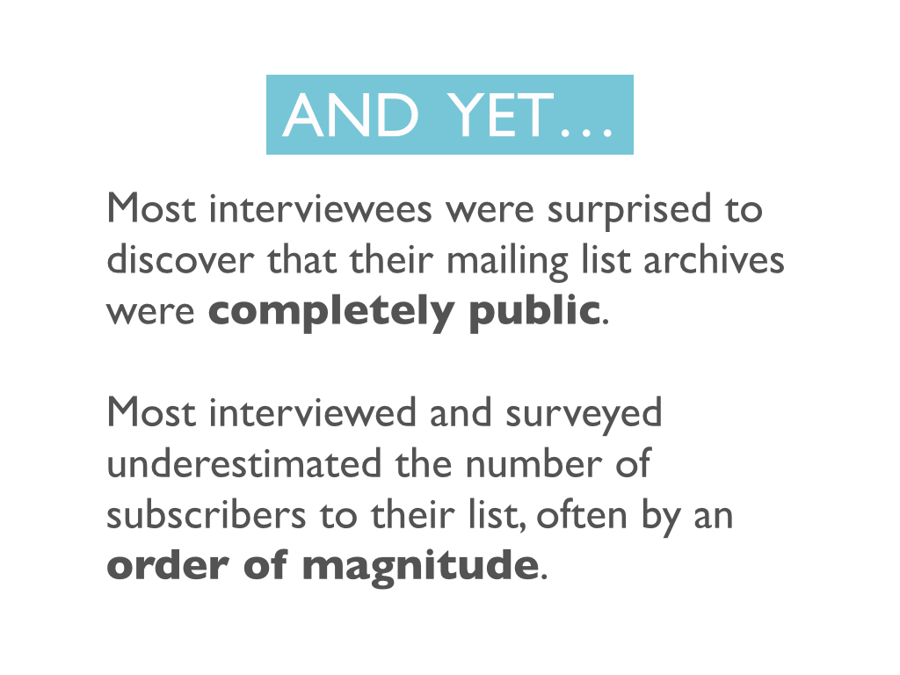
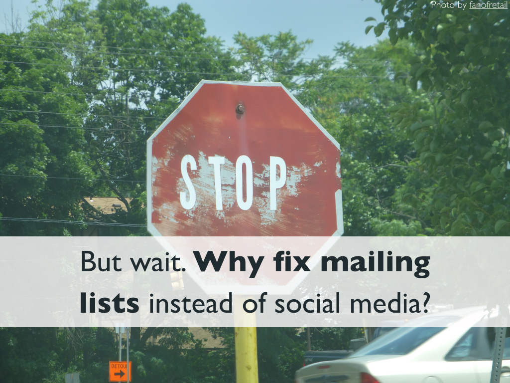

Mailing Lists: Why Are They Still Here, What's Wrong With Them, and How Can We Fix Them?
Authors
Amy X. Zhang, MIT CSAILMark Ackerman, University of Michigan
David Karger, MIT CSAIL
Abstract
Mailing lists have existed since the early days of email and are still widely used today, even as more sophisticated online forums and social media websites proliferate. The simplicity of mailing lists can be seen as a reason for their endurance, a source of dissatisfaction, and an opportunity for improvement. Using a mixed-method approach, we studied two community mailing lists in depth with interviews and surveys, and surveyed a broader spectrum of 28 lists. We report how members of the different communities use their lists and their goals and desires for them. We explore why members prefer mailing lists to other group communication tools. But we also identify several tensions around mailing list usage that appear to contribute to dissatisfaction with them. We conclude with design implications, discussing ways to alleviate these tensions while preserving mailing lists' appeal.
Video
Presentation
This talk was given at CHI 2015 in Seoul, Korea.
Believe it or not, mailing lists are 40 years old! The first mailing list was created in 1971. To give you
a sense of how long ago that was, that was back when people dressed like tihs and thought it was cool. In terms
of technology years, much like dog years, 40 years seems like an even longer time. After all, this is what a
personal computer and a typical phone looked like back in those days.
Today mailing lists are still pretty much the same as they were backin 1970. You send an email - everyone else on the list gets the email. Simple.
Meanwhile other forms of group communication systems have come around in the last few decades that have a lot of interesting new features. We've got Facebook Groups, Reddit, Google+ Communities, and discussions forums such as with phpBB or the newer Discourse.org. There are also many others more focused on specific aspects of discussion, such as Q&A (Quora, StackOverflow) or real-time chat (Slack). Most of these have likes, they've got upvoting, you can follow threads, block people, follow certain people, and more.
Meanwhile other forms of group communication systems have come around in the last few decades that have a lot of interesting new features. We've got Facebook Groups, Reddit, Google+ Communities, and discussions forums such as with phpBB or the newer Discourse.org. There are also many others more focused on specific aspects of discussion, such as Q&A (Quora, StackOverflow) or real-time chat (Slack). Most of these have likes, they've got upvoting, you can follow threads, block people, follow certain people, and more.
But as I'm sure you all can attest, mailing lists are still ubiquitous tools for discussion. So then why are people still using them?
Is it just a matter of inertia? Do people not know any better? Is it just the old people that still prefer mailing lists?
Well what we found as the answers to those questions is No. It turns out when we asked people, they had a lot of reasons for still preferring mailing lists over newer tools.
Well what we found as the answers to those questions is No. It turns out when we asked people, they had a lot of reasons for still preferring mailing lists over newer tools.
Well that then leads us to wonder, with all these new tools, have we learned anything in the last 40 years? And what we found was Yes.
Mailing lists have a lot of problems too. And some of these problems have been addressed in newer discussion systems and social media with the addition
of newer features.
So what does this tell us? Well for one, we can learn from mailing lists. We can look at mailing lists as these
systems that have had a really strong staying power despite them not evolving in 40 years. And we can look at why
people prefer mailing lists and think about how to improve newer group discussion tools.
Something else we can do, which I really really want to emphasize, is that we can improve mailing lists. And I want to emphasize this becaomse mailing lists haven't gotten a lot of love from developers or from research in comparison with other newer systems. And yet improvements on mailing lists could have a huge impact given just how many people out there still use them.
Something else we can do, which I really really want to emphasize, is that we can improve mailing lists. And I want to emphasize this becaomse mailing lists haven't gotten a lot of love from developers or from research in comparison with other newer systems. And yet improvements on mailing lists could have a huge impact given just how many people out there still use them.
Here's an outline of the 3 main questions I'll be tackling in this talk.
So the first of the questions we examine then is - why are mailing lists still around? Why are people still using them
in the face of newer social media?
Then we look at what problems people still have on current mailing list systems.
And finally, we consider how the problems that are on mailing lists could be improved with new features, some of which are implemented in newer systems.
Then we look at what problems people still have on current mailing list systems.
And finally, we consider how the problems that are on mailing lists could be improved with new features, some of which are implemented in newer systems.
Before I get into the answers to those questions, I'll discuss our method, which was primarily qualitative.
We conducted in-depth interviews with 10 members each of two different mailing list communities. We chose two communities
that were relatively large and well-established in terms of how long they had been around and how integrated they were in the
community.
We analyzed the interview data using a generative approach and as the interviews went on, iteratively built up common themes we saw. We then built a survey to reach more members of the communities.
And finally, we sent the same survey to 28 other communities of varying size and functin, so including social groups, academic groups, cultural clubs, neighborhood lists, sports teams, and more.
In total we interviewed 20 people and surveyed 415 people.
We analyzed the interview data using a generative approach and as the interviews went on, iteratively built up common themes we saw. We then built a survey to reach more members of the communities.
And finally, we sent the same survey to 28 other communities of varying size and functin, so including social groups, academic groups, cultural clubs, neighborhood lists, sports teams, and more.
In total we interviewed 20 people and surveyed 415 people.
So a little bit more about the two communities we focused on primarily.
The first, which we call LAB is a 1000-person technology research lab in a mid-sized university. This mailing list
has existed for around 15 years and is comprised of mostly graduate students, who are automatically added to the list,
some undergraduates, researchers, faculty, and administrators. They have discussions, Q&As event announcements, and other
community chatter.
The list has public archives and also is open for anyone to join. so it also contains many outside parties and alumni of the lab, which is why the subscription count is more like 4000 people.
The list has public archives and also is open for anyone to join. so it also contains many outside parties and alumni of the lab, which is why the subscription count is more like 4000 people.
The 2nd group we studied is a 300-person undergraduate dormitory of another mid-sized university. The mailing list
has been around for over 10 years and has public archives but is private to join. Almost all members live and eat in the same
physical buildings over the course of several years.
The list has students from sophomore year to senior year, administrators, and residential advisors and mostly contains event announcements plus community discussion. Sophomores are automatically added to the group when they join the dorm but anyone can leave at any time.
The list has students from sophomore year to senior year, administrators, and residential advisors and mostly contains event announcements plus community discussion. Sophomores are automatically added to the group when they join the dorm but anyone can leave at any time.
So our first question that we ask is why do people still choose to use mailing lists?
We asked people to compare their use of mailing lists to other more modern group discussion systems such as Facebook Groups, discussion forums,
subreddits, and G+ communities.
After mailing lists, we found that Facebook Groups were used the most often out of all the tools. We found that 68% of people surveyed used mailing lists often or always
while the next most used system was Facebook Groups, which 26% of people used often or always.
We also asked people if they would prefer if their mailing list were switched to another system. Overall we found low agreement with switching
to any other system.
We asked interviewees to explain why they were not interested in moving to other systems and found 4 main themes.
We focus now primarily on Facebook Groups as this was the most analogous system in people's minds.
And actually for both communities, there did exist a Facebook Group in addition to the mailing list already. And in both cases, the Facebook Groups had very low activity. So the comparison was quite concrete for many of our interviewees.
And actually for both communities, there did exist a Facebook Group in addition to the mailing list already. And in both cases, the Facebook Groups had very low activity. So the comparison was quite concrete for many of our interviewees.
The first reason that people stated was that email is still considered as a tool for work while Facebook is considered a place for
play and also for procrastination from work.
One interviewee was concerned about the increase in cat videos that might appear if the list were moved to a Facebook Group.
Other interviewees felt a bit more conflicted and felt that the discussion on the mailing list was kind of something in between normal emails and
social media, in that sometimes it was more like work (such as event announcements) and sometimes it was more like play (humorous banter). And people
disagreed about whether or not mailing list emails were distracting from other more work-related emails. We'll come back to this idea of something in between later.
Another thing that came up in the interviews was that email somehow felt more private than social media.
Many interviewees mentioned the images of people's faces and hyperlinks to their profiles as contributing to the public feeling of Facebook.
And they used this as a reason for why they thought the community moving to Facebook Groups would result in a lot less participation as more people self-censor.

However, a troubling thing that we did notice was that most interviewees had no idea that their mailing list archives were completely public.
Also when we asked people to guess how many subscribers were on the list, most people underestimated the number, sometimes by an order of magnitude. For instance, only 7% of people surveyed in LAB correctly guessed the size of the list. The median guess was 500-800 people while the true number is over 4000.
Also when we asked people to guess how many subscribers were on the list, most people underestimated the number, sometimes by an order of magnitude. For instance, only 7% of people surveyed in LAB correctly guessed the size of the list. The median guess was 500-800 people while the true number is over 4000.
Another theme that came up was that email carried with it a greater confidence that it would be seen.
This interviewee invoked how non-deterministic algorithms that manipulate many feeds gave him less confidence that people would see his post. So when he wanted to get the
word out about an event or ask for help, he chose to turn to the mailing list instead of to Facebook Groups.
The fourth thing we found was that email management is more customizable than a one-size-fits-all website.
In fact 67% of the people we surveyed liked that they could create their own filters and move things to different folders. Several
interviewees mentioned appreciating the different tabs that Gmail introduced to separate out different categories of emails. Others created their own
filter to move different mailing lists to separate dedicated folders.
Additionally almost all interviewees liked the ability to use subject lines to quickly skim over unseen content.
Many interviewees complained about how on Facebook Groups, you can either have notifications on or notifications off. So when they're on and the group posts often, your phone is now buzzing all the time, so you get annoyed and turn them off. Now you no longer check or post to the group anymore because you're too preoccupied with your main news feed and don't have notifications to remind you about the group. And then over time the group activity dies.
Many interviewees complained about how on Facebook Groups, you can either have notifications on or notifications off. So when they're on and the group posts often, your phone is now buzzing all the time, so you get annoyed and turn them off. Now you no longer check or post to the group anymore because you're too preoccupied with your main news feed and don't have notifications to remind you about the group. And then over time the group activity dies.
So now moving on to the next question that we tackled: What are the problems and limitations of mailing lists?
We found 3 main sources of tensions within mailing lists. Tensions being when we noticed people within the same community having
very different or conflicting ideas about the list, leading to tensions.
The first tension was over the type and quantity of content on the list.

To give you a sense of some of the things people disagreed about, here are two quotes from different people in DORM.
The first person mentions how he really enjoys the intellectual discussions that went on in the mailing list. And the 2nd person
says how she personaly is happy that the discussions are gone.
For another example within LAB, we see how these two people have opposite ideas about whether to reply to the list
or reply to the sender of a post.
A second tension that we noticed was the desire that many expressed for more discussion on the mailing list
coupled with a hesitation to participate in those discussions.
One thing that we found suprising was that 66% of people who wanted more discussion on the list had actually
never participated in a discussion themselves.
So we decided to delve into this a bit more to understand what was deterring people from participating.
So we decided to delve into this a bit more to understand what was deterring people from participating.
Some things that interviewees mentioned as actively deterring them from participating in a conversation they wanted to
participate in was:
A fear of spamming large audiences. Maybe because you think people will actually ready your email, you worry about being annoying or taking up too much of people's time.
Also misinterpretation was a big issue for DORM since many of the people know each other and see each other. People were worried about wading in on controversial topics for fear of saying the wrong thing and offending or hurting others.
Heated arguments was an issue as well. As they say, "Don't feed the troll." This was an issue in LAB, where people would get into big ideological debates related to technology on a semi-regular basis.
Finally, appearing stupid was a large issue for LAB especially where many questions and answers are posed related to technical issues.
A fear of spamming large audiences. Maybe because you think people will actually ready your email, you worry about being annoying or taking up too much of people's time.
Also misinterpretation was a big issue for DORM since many of the people know each other and see each other. People were worried about wading in on controversial topics for fear of saying the wrong thing and offending or hurting others.
Heated arguments was an issue as well. As they say, "Don't feed the troll." This was an issue in LAB, where people would get into big ideological debates related to technology on a semi-regular basis.
Finally, appearing stupid was a large issue for LAB especially where many questions and answers are posed related to technical issues.

The last tension we found was over a push versus pull email access.
Let me explain a bit what that means. In traditional "push" systems, senders actively push content to recipients. In these systems, such as with
traditional email and text messaging, there's an expectation that recipients receive all messages and they receive them in real-time.
In pull systems, senders make content available and recipients pull it when they want to access it. So in most cases, social media, forums, and RSS are examples of pull systems.
In pull systems, senders make content available and recipients pull it when they want to access it. So in most cases, social media, forums, and RSS are examples of pull systems.
However, when we think about push versus pull in terms of practice as opposed to the technical system, we can see how
some email strategies are like traditional push systems while other mailing list access strategies maintain a practice more similar to pull systems.
So a push experience would mean reading mailing list emails just like other emails and receiving them in the main inbox. And a pull experience would mean using a filter to automatically file emails into a separate folder or tab.
When we surveyed and interviewed people, we found that most people used one of these two strategies to manage their email. People using pull were more likely to miss emails and read emails when they felt like it. People using push were more likely to get annoyed about missing emails and also to read every email from the list.
So a push experience would mean reading mailing list emails just like other emails and receiving them in the main inbox. And a pull experience would mean using a filter to automatically file emails into a separate folder or tab.
When we surveyed and interviewed people, we found that most people used one of these two strategies to manage their email. People using pull were more likely to miss emails and read emails when they felt like it. People using push were more likely to get annoyed about missing emails and also to read every email from the list.
To give a sense of the perspectives of push versus pull people, I have the following quotes from two different people.
From this you can begin to see how the strategy that you employ might alter your expectations of how other people also access their
mailing list email. And you can see how this tension could exacerbate the two other tensions mentioned including over disagreement over
type and quantity and also fear of spamming others.
So the last thing we ask is: How can we make mailing lists better?

But before we get to that question, let's first consider why we might want to focus on improving mailing lists.
Why not instead improve social media given what we know?
Well there's actually some good reasons to focus attenion on mailing lists. First off, you don't have to worry as much about a user interface -
the main user interface that people will be using is their own preferred email client.
This also means less disruption to users because they can keep doing what they're already doing.
And finally, mailing lists aren't a monolith like social media systems so you don't have to worry about getting all your friends onto this new system. Thus it can be a lot easier to get different communities to try out a new list system.
Now back to the question about how to improve mailing lists.
This also means less disruption to users because they can keep doing what they're already doing.
And finally, mailing lists aren't a monolith like social media systems so you don't have to worry about getting all your friends onto this new system. Thus it can be a lot easier to get different communities to try out a new list system.
Now back to the question about how to improve mailing lists.

One thing to consider is how we noticed from the interviews many people describing the content on mailing lists as
something in between social media and email in terms of play vs. work. So what if we made the features in mailing lists
more like social media?
What if we allowed people to stay within their email client but incorporate features from social media systems?
Some features that social media systems have added to encourage participation and help users filter
content include tagging, up-voting, and collaborative filtering.
Another thing we might consider is changing up how everyone receives every post right now on mailing lists. But we need to be careful
and consider the tradeoffs that new delivery mechanisms present.
For instance, we still want to maintain the notion of guaranteed delivery since that was something mentioned as important to people
But we also want to encourage people who are shy about posting to contribute more. So some things we could do here could be:
We could still give every person every email but make it easier for people to divert different content to different folders.
We could break guaranteed delivery only in the cases where people are shy and possibly wouldn't have posted anyway. We could allow people to post to only a small subset of users and grow the recipients to more people if the readers upvote the post.
And we could introduce "friend-moderators" or people you select to vet your post before it gets posted more widely.
One thing we might want to keep in mind here is how we might deterministic filtering as opposed to non-deterministic filtering, such as a news-feed-like opaque algorithm, to allow users to still feel in control of what emails they get and don't get, which is something that interviewees said they liked about email.
We could still give every person every email but make it easier for people to divert different content to different folders.
We could break guaranteed delivery only in the cases where people are shy and possibly wouldn't have posted anyway. We could allow people to post to only a small subset of users and grow the recipients to more people if the readers upvote the post.
And we could introduce "friend-moderators" or people you select to vet your post before it gets posted more widely.
One thing we might want to keep in mind here is how we might deterministic filtering as opposed to non-deterministic filtering, such as a news-feed-like opaque algorithm, to allow users to still feel in control of what emails they get and don't get, which is something that interviewees said they liked about email.
Finally the issues around privacy means that we need to look critically at how to promote greater transparency within mailing lists
so people have a better sense of just who their audience is.
Some future work we are in the process of doing now is to look at more work-oriented mailing lists and see
what the anologous tools for comparison are there. Probably Facebook Groups aren't a natural fit for most of these
groups (unless you happen to work at Facebook).
We also are working on a new mailing system that aims to implement some of the features we mentioned. It is still currently in
active development and lacks many things that we are planning. However, you can currently create a mailing list much like in
other systems and test out the system as we develop more.
And this is what the current web interface looks like - however changes will be coming here as well.
Email me with questions or comments - axz@mit.edu